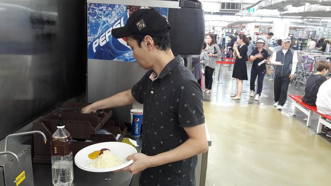
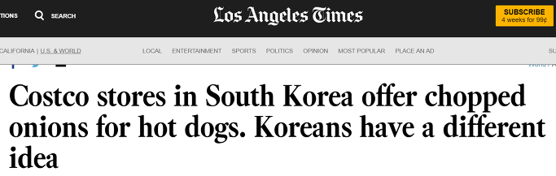
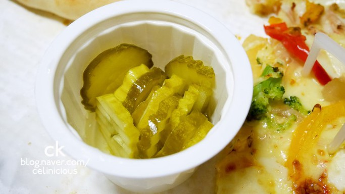
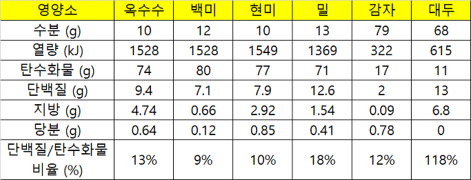
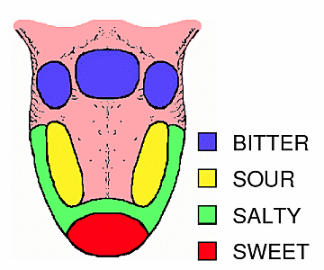
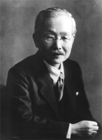
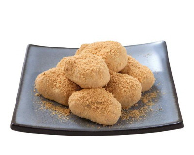

코스트코 양파와 5가지 맛의 비밀 - 한국 반찬 문화의 기원을 찾아서
게시: 2017-12-03T23:56:01+09:00

http://www.latimes.com/world/asia/la-fg-korea-onion-salad-20170919-story.html )
코스트코의 카페테리아에서는 핫도그와 피자, 치킨베이크 등의 음식을 파는데, 그 카페테리아 한쪽 구석에 잘게 썬 양파를 무제한으로 주는 일종의 양파 디스펜서가 있습니다. 사람들은 보통 이걸 접시에 하나 가득 담아서 그 위에 역시 옆에 있는 케첩과 머스터드를 잔뜩 뿌리고 섞은 뒤에 먹습니다. 마치 양파 샐러드처럼요. 양파 샐러드라니 ! 그런거 드셔 보신 적 있습니까 ? 그런데 그거 의외로 먹을 만 합니다. 아마 물에 담궈놓았던 양파인지 매운 냄새가 많이 희미해진 다음이거든요. 저도 거기서 핫도그 같은 것을 먹을 때마다 그거 만들어서 먹습니다. 일부 몰지각한 사람들이 집에서 가져온 락앤락 밀폐용기에 그 양파를 잔뜩 담아 간다고 해서 '코스트코 양파거지'라는 말도 나왔다고 들었습니다만, 저는 그런 사람을 직접 목격한 적은 없습니다.

그런데 이 코스트코 양파 샐러드는 한국 코스트코에만 존재하는 모양입니다. 전에 어떤 영어권 해외 매체에 이 한국 코스트코에만 존재한다는 희한한 양파 샐러드에 대해 보도하면서, 이걸 코스트코 김치라고 부르는 것을 읽은 적이 있습니다. 원래 그 양파 디스펜서는 세계 모든 코스트코에 다 있는 것이고, 원래 핫도그를 먹는 사람들이 핫도그에 약간 넣어서 먹을 수 있도록 무료로 제공하는 것인데, 한국처럼 그렇게 치킨베이크건 피자건 모든 음식에 양파케첩범벅을 곁들여 먹는 나라는 없다고 하더군요. 그러면서 왜 한국에서만 이런 희한한 음식이 생겼는지 분석을 해놓았습니다. 그 취재에 응한 한국 사람들의 답변은 '한국 음식은 기본적으로 항상 반찬을 주식인 밥과 함께 먹는다, 그 문화가 이렇게 이어진 모양이다'라는 것이었습니다. 물론 공짜로 양파가 제공된다는 것도 큰 역할을 하긴 했지요.
그 기사를 읽으니, 제가 신입사원 시절 미국에 뭔가 테스트를 위해 장기 출장을 갔다가 테이크 아웃 피자를 픽업하러 갔던 경험이 생각났습니다. 그때 같이 갔던 팀의 막내였던 제가 차를 몰고 미리 전화로 주문해놓은 피자를 가지러 갔는데, 나이든 피자집 주인이 피자만 주는 거에요. 저는 '피클은 왜 안 주니 ?'라고 물었고, 이 할아버지는 '뭐 ? 뭔 피클 ?'하면서 어리둥절한 표정을 지었습니다. 그때 피자와 함께 오이 피클을 먹는 것은 우리나라의 문화이지 미국 문화가 아니라는 것을 처음 알았습니다. 생각해보니 한 15년 전쯤에 우리나라에 처음 베트남 쌀국수가 들어올 때, 쌀국수 집에 가면 정말 쌀국수만 나올 뿐 단무지나 양파 피클이 함께 제공되지 않아서 같이 갔던 사람들이 몹시 황당해하던 것이 기억납니다. 즉, 주식과 함께 뭔가 자극성 맛의 반찬을 함께 먹는 것은 우리나라의 문화인 것입니다. 일본과 중국도 비슷한 문화를 가지고 있지요.

이런 반찬 문화는 또 우리 한식을 서양식 음식과는 먹는 방법 자체를 다르게 만들기도 합니다. 이것도 아마 많은 분이 느끼신 바 있을 겁니다.
어려서 미국으로 이민간 재미교포분과 한식으로 식사를 한 적이 있습니다. 당시 한 50대 초반이었던 그 분은 한국에 오신지 한 1년 정도 된 상태였는데, 그때 그 분과 같이 먹은 식사는 은대구 정식이었습니다. 강남에 있는 좀 비싼 식당이었고, 밥과 찬이 완전히 1인분씩 별도의 트레이에 나오는 그런 곳이었는데, 식사를 하기 시작하자 좀 난감한 상황이 벌어졌습니다. 이 양반이 밥은 안 드시고 콩나물 국만 열심히 드시는 거에요. 그러더니 은대구 구이를 꼼꼼히 다 드시고, 이어서 김치를 드시더군요. 그렇게 반찬을 하나씩 다 드시더니, 이어서 쌀밥만 남자 비로소 밥을 드시더군요. 그런데 맨밥만 먹으면 맛이 없쟎아요. 본인도 그렇게 느꼈는지, 밥에 은대구 찍어먹으라고 준 간장을 부어서 드시더군요. 그 분이 그런 이상한 방식의 식사를 할 때, 속으로 '밥과 찬을 번갈아 드셔야지요'라고 말하려다가, 이분은 서양식으로 코스별로 드시는 것을 선호하시나 보다 라고 생각하고 아무 말 안 했습니다.
또 한번은 한국에 출장 온 오스트리아분을 데리고 여러 사람들과 어떤 회사의 구내 식당에서 식사를 한 적이 있는데, 이 양반도 그렇게 반찬 따로 국 따로 밥 따로 드시더군요. 보다 못한 누군가가 '한식은 밥과 찬을 같이 드셔야 합니다'라고 하니까 한국에 자주 왔던 이 양반이 씩 웃으면서 '알아요, 그래도 난 이렇게 먹는 게 좋아요'라고 말하더군요. 그러니까 서양식은 한번에 한가지 음식만 먹는 것이 정상이고, 한식처럼 이 음식 저 음식을 섞어 먹는 것을 싫어하는 모양이더근요. 서양식은 음식 재료 하나하나의 본래의 맛을 내는 것을 중요시한다던데, 아마 그런 것 하고도 상관있나 봅니다.
반면에 한식은 밥과 여러가지 찬을 섞어서 먹는 문화가 발달했습니다. 왜 그랬을까요 ? 뭐 간단합니다. 위에 언급한 재미교포분의 경우처럼, 쌀밥만 먹으면 너무 맛이 없거든요. 빵은 아무 버터나 잼 없이도 그냥 빵만 먹는 것이 가능합니다. 옥수수도 그렇지요. 김치 없이 옥수수만 먹는 것이 크게 이상하지 않습니다. 감자의 경우는 좀 이야기가 다르긴 합니다. 감자는 유럽에 처음에 전해졌을 때에도 '아무 맛이 없는 천박한 음식'이라면서 사람들이 싫어했지요. 하지만 감자가 그 자체로는 아무 맛이 없다고 해도, 쌀밥만큼은 아닐 겁니다. 쌀밥은 정말 아무 반찬없이 먹는 것이 매우 힘들 정도로 정말 맛이 없지요. 맛이 나쁘다는 것이 아니라, 그냥 맛이 존재하지 않지요.
결국 한국 음식 문화의 특성은 쌀 특유의 그 밋밋한 맛 때문에 비롯된 것입니다. 쌀은 단위 면적당 가장 많은 인구를 부양할 수 있고 또 (현미의 경우) 무기질도 꽤 풍부한 매우 우수한 음식이긴 합니다만, 단점이 있긴 합니다. 그리고 쌀 특유의 무미건조함도 바로 그 단점에서 비롯된 것입니다. 쌀의 영양학적 특성을 다른 곡물과 비교해보면 그 단점이 뭔지 쉽게 알 수 있습니다. 바로 단백질입니다. 곡물의 주성분은 탄수화물입니다만, 그 탄수화물과의 비율로 게산해보면 쌀이 확실히 단백질 함량이 떨어진다는 것을 알 수 있습니다. 또 감자가 유럽에 전파 되었을 때 왜 사람들이 싫어했는지 쉽게 이해됩니다.

그런데 맛이라는 것이 단백질과 상관있나요 ? 상관이 있다고 할 수 있습니다. 먼저, 맛이라는 것의 정의를 봐야 합니다. 동양에서는 오미라고 해서, 맛에는 단맛 짠맛 신맛 쓴맛 매운맛의 다섯가지 맛이 있다고 하지요. 그러나 고대 그리스 철학자인 아리스토텔레스에 따르면 맛은 단맛 짠맛 신맛 쓴맛의 4가지입니다. 실제로 매운 맛이라는 것은 맛이라기보다는 일종의 통증과 냄새의 결합이라고 하지요. 그래서 서양에서는 맛을 항상 4가지로 표현해왔습니다. 1908년까지는요. 1908년에 들어 현대적인 미감은 4가지가 아니라 5가지가 됩니다. 바로 우마미(umami), 즉 감칠맛입니다.

(매운 맛이란 것이 존재하지 않는다고요 ??? 정말 그렇답니다. 최소한 혓바닥에서는요.)
우마미라는 것은 사실 일본어에서 파생되어 전세계 공용어로 인정된 단어입니다. 일본어로 맛있다는 표현을 우마이라고 하는데, 거기에 맛을 뜻하는 한자어 미(味)의 일본어 발음인 미를 붙여 우마미(うま味)라는 단어가 만들어진 것입니다. 이렇게 일본식 이름이 붙은 이유는 이 맛을 발견(?)한 사람이 바로 일본인 학자인 이께다 끼꾸네(池田 菊苗)라는 분이기 때문입니다. 이 분은 다시마 두부전골 국물에서 글루탐산(glutamic acid, glutamate)을 추출하여 이 물질이 고기 국물의 감칠맛을 내는 본질이라는 것을 발견하여 학회에 발표했습니다. 뿐만 아니라 이 물질에 아지노모또(味の素) 즉, 맛의 근원이라고 이름을 붙였는데, 이것이 바로 MSG(monosodium glutamate)입니다. 이 분은 다음해인 1909년에 MSG를 대량 생산하는 공법까지 만들었는데, 이것이 바로 우리나라에서는 미원이라는 이름으로 알려진 조미료입니다.

우마미, 즉 감칠맛이라고 번역되는 이 맛을 내는 성분인 글루탐산은 주로 고기, 생선, 치즈 등의 동물성 식품에 많습니다. 원래 고기나 생선을 넣지 않고 음식의 맛을 내는 것이 매우 어려운데, 바로 그런 이유이지요. 저는 김용 선생의 무협지 팬인데, 그런 무협지를 읽다보면 소림사 스님이 객점에 들러 '소채만 넣은 국수'를 드시는 장면이 가끔 나옵니다. 생각해보면 모든 국수가 고기 또는 멸치를 기본으로 국물을 내는데, 과연 그렇게 식물성만으로 국물을 낼 때는 어떤 것을 쓸까요 ? 의외로 채소 중에서도 글루탐산이 많은 것들이 있습니다. 바로 버섯, 토마토 등입니다. 또 글루탐산의 본질은 결국 아미노산(amino acid), 즉 단백질인데, 채소 중에도 단백질이 풍부한 것이 꽤 있습니다. 가령 콩과 시금치, 다시마 등이지요. 우리나라 사찰에서도 스님들이 드시는 사찰 국수의 국물은 주로 깨와 콩 등으로 만든다고 들었는데, 깨에도 지방 뿐만 아니라 단백질 함량이 꽤 높습니다.
우리나라에는 전통적으로 소나 돼지 등의 가축 수가 많지 않아 동물성 단백질을 구하기 어려웠고, 그래서 대신 찾은 것이 바로 콩으로 만든 음식, 즉 된장과 간장입니다. 된장과 간장에도 감칠맛을 내는 글루탐산이 많이 들어있습니다. 또 거의 한국인의 본질처럼 취급되는 김치의 주재료인 배추에도 채소치고는 글루탐산이 꽤 많이 들어있습니다. 반면에 무에는 글루탐산이 그렇게 많지 않다고 합니다. 그래서 무를 먹을 때는 그냥 시원하고 단 맛이 나는데, 배추를 먹을 때는 뭔가 고소하고 구수한 맛이 나는 것이더군요. 의외로 배추는 우리나라에 꽤 늦게 전파된 채소로서 고려 후기에야 들어왔는데, 계속 무 짠지만 먹다가 배추 절임을 먹게 되었을 때 우리 조상들이 얼마나 기뻐했을지 상상이 가는 일입니다.
탄수화물 위주인 쌀의 밋밋한 맛을 보충해주는 콩 단백질의 역할을 단적으로 보여주는 한국 음식이 바로 인절미입니다. 인절미 겉에 콩가루가 없다고 생각해보십시요. 얼마나 밋밋한 맛이 나겠습니까 ?

우리나라의 반찬 문화 이야기에 대해 쓰려다가, 코스트코 양파 김치에서 시작해서 결국 콩 이야기로 글이 끝나게 되었습니다. 끝내기 전에 우리나라의 반찬 문화가 낳은 그닥 좋지 않은 식습관에 대해 한마디만 쓰겠습니다. 제가 국민학교 시절에 읽은 학교 프린트물 중에서 '올바른 식사 예절'이라는 것이 있었습니다. 과거 우리 양반들이 식사를 할 때 지켜야 할 예절에 대한 것이었는데, 후루룩쩝쩝 소리를 내며 먹으면 안 된다, 김치를 집을 때 겉에 묻은 양념을 떨어내려고 남은 김치에 비비면 안 된다 등의 항목이 있었습니다. 그런데 그 중에 정말 이해가 안 가는 부분이 있었습니다. 바로 입에 밥을 넣은 채로 반찬을 집어먹지 말고, 반드시 밥을 다 씹어 삼킨 후에 반찬을 집어 먹으라는 것이었습니다. 보통 안 그러쟎아요 ? 그런데 나중에 다른 사람들과 밥을 먹다가 왜 그런 예절 규칙이 만들어졌는지 알게 되었습니다. 특히 입이 크고 또 밥 먹을 때 입을 크게 벌리는 친구와 마주 보고 밥을 먹다 보니, 그 친구가 입을 크게 벌리고 반찬을 넣을 때 마다 반쯤 씹혀 곤죽이 된 그 친구 입속의 음식물이 너무 잘 보이는거에요. 그 다음부터는 항상 그 친구와 밥을 먹을 때는 될 수 있는 대로 그 친구 옆자리에 앉았는데, 글쎄요, 저도 어지간 해서는 밥 다 씹어 먹고 반찬을 먹을 정도로 점잖은 척 하지는 못 하겠더군요. 대신 입에 반찬을 집어 넣을 때는 될 수 있는대로 고개를 숙이고 조금만 벌려 넣곤 합니다. 우리나라 사람들끼리는 서로 말 안 합니다만, 우리나라에 온 외국인들의 전반적인 평가는 '한국인들의 식사 예절은 빵점'이라고 하는데, 그것도 이런 반찬 문화와 상관이 전혀 없지는 않을 것 같습니다.
Source :
https://www.wired.com/2011/06/why-do-we-like-the-taste-of-protein/
https://en.wikipedia.org/wiki/Rice
https://en.wikipedia.org/wiki/Umami